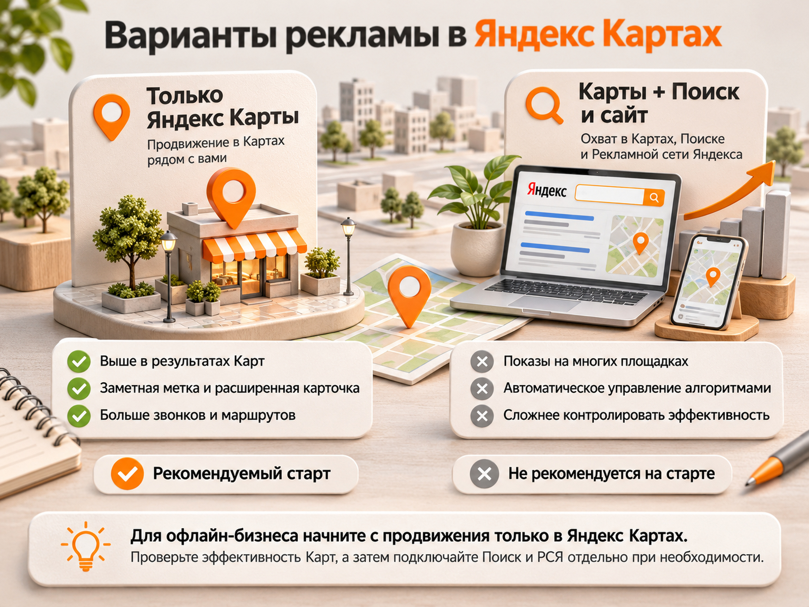
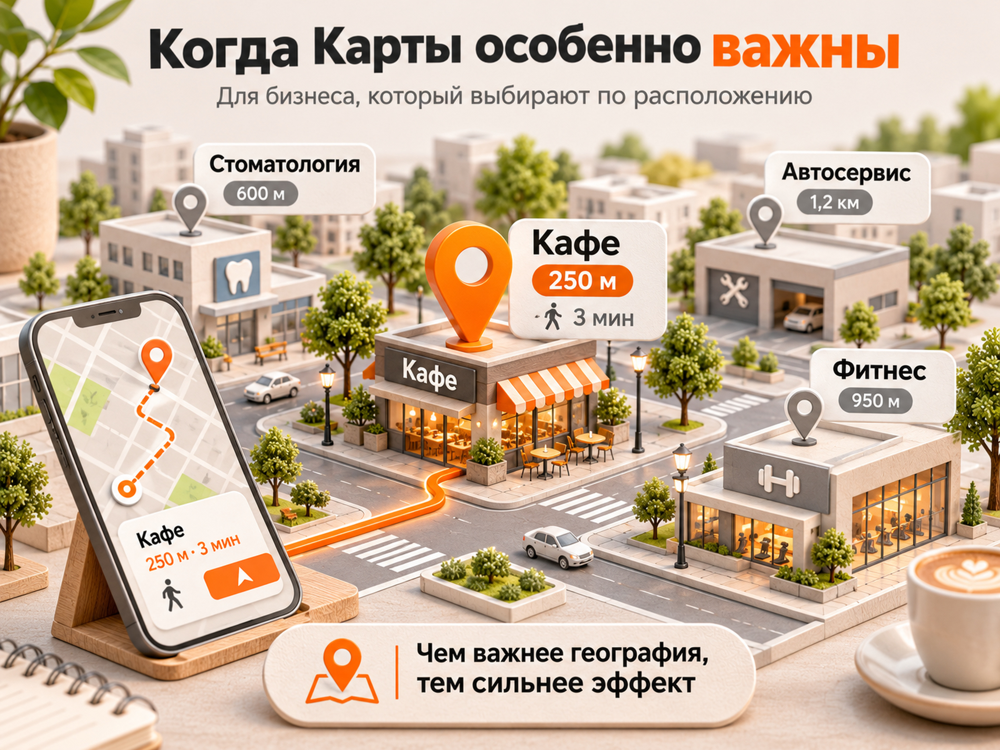
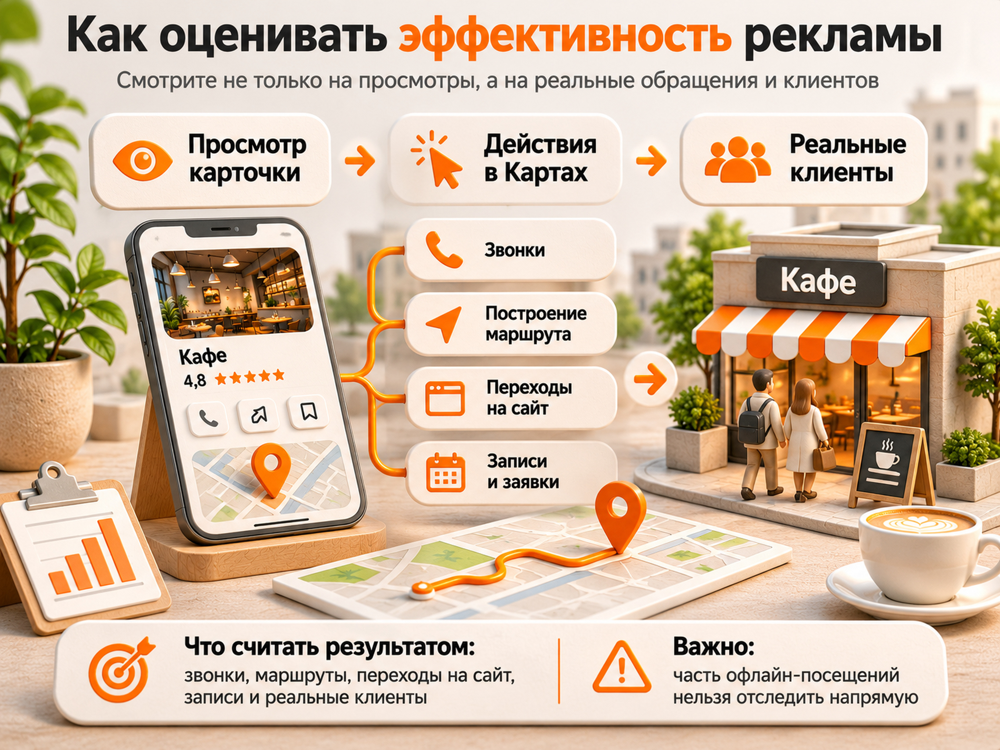

Блог о платном трафике
Продвижение в Яндекс Картах: как продвигать карточку компании
Продвижение в Яндекс Картах - это работа с карточкой организации и рекламными форматами, которые помогают компании чаще появляться в локальной выдаче. Начинать нужно с заполнения профиля и понятного предложения, а уже потом подключать платное размещение.
В статье разберем, как продвигать карточку бесплатно, когда нужна реклама, от чего зависит стоимость, какие действия приводят клиентов и почему даже оплаченная кампания не гарантирует первое место.
Что такое продвижение в Яндекс Картах
Пользователь открывает Карты не только для построения маршрута. Он ищет компанию рядом, сравнивает несколько карточек, изучает услуги и отзывы, а затем звонит, прокладывает маршрут или записывается. Поэтому продвижение в Яндекс Картах должно соединять видимость профиля и удобство следующего действия.
У продвижения есть две части. Первая - бесплатная работа с данными, содержанием и репутацией карточки. Вторая - платное размещение через доступные рекламные инструменты Яндекса. Реклама может ускорить получение показов, но не исправляет неверную рубрику, пустой прайс или устаревший телефон.
Что влияет на продвижение в Яндекс Картах
Единой настройки, которая автоматически выводит компанию в верх локальной выдачи, нет. На видимость обычно влияют несколько связанных факторов:
- соответствие карточки запросу пользователя и выбранной рубрике;
- адрес, фактическое расположение точки и удобство для конкретного района;
- полнота данных: описание, услуги, цены, график, контакты и особенности;
- качество фотографий, видео, публикаций и других материалов в профиле;
- рейтинг, содержание и свежесть отзывов;
- действия пользователей: звонки, маршруты, переходы и обращения.
Эти факторы нужно проверять по своей нише и региону. Нельзя обещать одинаковую позицию для всех компаний: две карточки с похожим оформлением конкурируют в разных условиях.
Как продвигать карточку в Яндекс Картах бесплатно
Бесплатное продвижение начинается с того, что компания приводит карточку в состояние готовой посадочной страницы. Цель не в том, чтобы добавить как можно больше ключевых слов, а в том, чтобы быстро ответить на вопросы клиента и не дать ему уйти к соседней организации.
Получить права на карточку
Найдите организацию в Яндекс Картах и проверьте, кто управляет профилем. Если карточка уже создана, запросите доступ через Яндекс Бизнес. Без прав владельца невозможно регулярно обновлять данные, отвечать на отзывы и контролировать статистику.
Заполнить основные данные
Укажите настоящее название компании, подходящую основную рубрику, адрес, телефон, сайт и график работы. Не добавляйте в название список услуг и рекламные обещания. Такая информация должна находиться в описании и соответствующих разделах профиля.
Добавить услуги, цены и особенности
Составьте понятный список товаров или услуг, добавьте актуальные цены и заполните важные особенности точки. Пользователь должен увидеть, подходит ли ему компания, еще до звонка или визита.
Показать компанию на фото и видео
Добавляйте реальные изображения входа, помещения, команды, товара и результата работы. Фотографии должны помогать с выбором, а не просто заполнять галерею. Для локального бизнеса особенно важны вход, ориентиры и детали, которые снижают сомнения перед визитом.
Работать с отзывами
Просите клиентов поделиться собственным опытом после покупки или визита и отвечайте на отзывы по существу. Не используйте одинаковые заготовки и не подменяйте реальные оценки искусственными публикациями. Важны не только средний балл, но и доверие к содержанию отзывов.
Публиковать обновления
Сообщайте об изменениях графика, новых услугах, акциях и сезонных предложениях, если эти материалы действительно полезны клиентам. Публикации помогают поддерживать карточку актуальной и дают дополнительные точки входа в профиль.
Проверять статистику карточки
Регулярно сравнивайте показы и действия пользователей с предыдущим периодом. Отдельно смотрите звонки, маршруты, переходы на сайт и поисковые запросы. Если просмотры растут, а обращений нет, сначала проверьте предложение, цены, фотографии и удобство контакта.
Сколько стоит продвижение в Яндекс Картах
Единой фиксированной цены у платного продвижения в Яндекс Картах нет. Стоимость зависит от выбранного инструмента и параметров конкретной организации.
| Формат продвижения | Принцип оплаты | От чего зависит цена | Кому подходит |
|---|---|---|---|
| Яндекс Бизнес | Стоимость рассчитывается для конкретной организации и срока размещения | Регион, категория бизнеса, срок и прогноз потенциальных клиентов | Когда нужен максимально простой запуск продвижения локальной точки |
| Яндекс Директ, Карты и список организаций | Оплата за клики по рекламе | Аукцион и параметры конкретной кампании | Когда Карты нужно вести как отдельный управляемый рекламный канал |
Стоматология в Москве, автосервис в региональном городе и локальное кафе могут получить разные условия. Точную сумму сервис показывает до оплаты.
Как узнать точную стоимость продвижения в Яндекс Картах
Точную стоимость для конкретной организации нужно смотреть в интерфейсе Яндекса при создании продвижения. До оплаты сервис показывает доступные условия и бюджет для выбранной компании.
- Открыть нужную организацию.
- Перейти в раздел продвижения.
- Выбрать нужный формат размещения.
- Указать доступный срок или параметры кампании.
- Посмотреть рассчитанную стоимость до оплаты.
От чего зависит стоимость продвижения в Яндекс Картах
Цена платного продвижения в Яндекс Картах зависит не от одного тарифа, а от параметров конкретного бизнеса и выбранного способа запуска.
- регион и расположение организации;
- категория или ниша бизнеса;
- срок продвижения;
- потенциальный спрос и прогноз количества клиентов;
- выбранный способ запуска: Яндекс Бизнес или отдельная кампания в Яндекс Директе.
Эти параметры не образуют единую формулу: разные рекламные продукты используют их по-разному.
Какие варианты платного продвижения есть в Яндекс Картах
Для локального бизнеса есть два основных сценария: автоматизированное продвижение через Яндекс Бизнес и отдельная кампания в Яндекс Директе. Бесплатное оформление карточки остается базой для обоих вариантов.
| Вариант | Как работает | Когда выбирать |
|---|---|---|
| Яндекс Бизнес | Сервис использует данные карточки и автоматически распределяет размещение на подходящих площадках. | Когда нужен простой запуск и нет задачи вручную управлять отдельным каналом. |
| Яндекс Директ | Можно отдельно настроить продвижение организации в Картах и списке организаций. | Когда важны самостоятельные настройки и контроль результата по Картам. |

Как работает платное продвижение в Яндекс Картах
Реклама помогает карточке организации стать заметнее, когда человек ищет услугу рядом или просматривает карту. Пользователь видит название, рейтинг, отзывы, фотографии, часы работы и может сразу построить маршрут или позвонить.
Рекламное продвижение не гарантирует первое место. На показы и позиции влияют релевантность запросу, расположение компании, качество карточки и параметры кампании.

Кому подходит продвижение в Яндекс Картах
В первую очередь продвижение в Картах полезно бизнесу, который клиент выбирает по расположению: кафе, стоматологии, салоны красоты, клиники, автосервисы, фитнес-клубы, магазины и другие локальные компании.
Если клиенту важно, насколько удобно до вас добираться, он часто принимает решение прямо на карте. Для бизнеса без привязки к географии этот канал обычно не должен быть основным.
Как подготовить карточку к рекламе
Платить за продвижение пустой или плохо оформленной карточки - плохая идея. Перед запуском проверьте профиль организации по короткому списку.
Правильно выбрать рубрики
Компания должна находиться по тем услугам, которые реально оказывает. Не добавляйте десятки смежных категорий только ради охвата.
Заполнить товары и услуги
Пользователь выбирает между организациями прямо в Картах, поэтому ему нужно сразу видеть ассортимент и базовое представление о ценах.
Добавить нормальные фотографии
Особенно это важно для ресторанов, клиник, салонов, фитнес-клубов, гостиниц и магазинов.
Проверить контакты и график работы
Ошибочный телефон или старое расписание способны свести рекламный эффект к нулю.
Работать с отзывами
Рейтинг и отзывы помогают человеку сравнить соседние компании перед выбором. Большой бюджет не заменяет нормальную карточку.
Как настроить платное продвижение в Яндекс Картах
Есть два основных пути: Яндекс Бизнес и Яндекс Директ. Перед настройкой определите, нужно ли вам простое размещение или самостоятельный контроль кампании.
Через Яндекс Бизнес
Добавьте организацию в Яндекс Бизнес или получите права на уже существующую карточку. Затем откройте раздел продвижения, выберите доступный формат и срок, изучите рассчитанный бюджет до оплаты.
Это наиболее простой вариант для владельца бизнеса. Проверьте площадки, которые входят в размещение: не стоит подключать более широкий пакет автоматически, если задача - проверить именно Карты.
Через Яндекс Директ
В Директе можно настроить отдельное продвижение организации в Картах и списке организаций. Этот вариант удобен, когда рекламой занимается специалист или Карты нужно вести как самостоятельный управляемый канал.
Можно ли продвигать компанию в Картах без сайта
Да. Пользователь может взаимодействовать непосредственно с карточкой организации: позвонить, построить маршрут, посмотреть фотографии, изучить услуги, открыть акцию или записаться.
Для небольшого кафе, салона или мастерской карточка в Картах иногда становится полноценной посадочной страницей. Поэтому ее оформлению нужно уделить столько же внимания, сколько обычному сайту.
Как выбрать способ продвижения в Яндекс Картах
Яндекс Бизнес - более простой автоматизированный запуск. Яндекс Директ - вариант для отдельного управляемого рекламного канала.
Если задача - проверить именно Карты, логично сначала запускать отдельное продвижение Карт. Не нужно автоматически смешивать Карты, Поиск и РСЯ в один пакет. Если Поиск или РСЯ нужны, их удобнее вести отдельно там, где можно контролировать результат.
Как оценивать эффективность продвижения в Картах
Оценивайте продвижение не только по просмотрам карточки, а по действиям, которые важны бизнесу: звонкам, маршрутам, переходам на сайт, записям, обращениям и реальным посещениям точки.
Если часть клиентов переходит на сайт, дальше можно считать заявки и стоимость конверсии. При этом у офлайн-бизнеса часть продаж не отслеживается: человек может увидеть организацию, построить маршрут и приехать без звонка. Поэтому сравнивайте статистику с реальной динамикой обращений и посещений.

CPA в Яндекс Директе: что это и как считать стоимость конверсии
Типичные ошибки в продвижении в Яндекс Картах
Даже хорошо настроенная реклама не компенсирует проблемы в карточке. Чаще всего результат ухудшают:
- ключевые слова и рекламные обещания в названии организации;
- несоответствующая основная рубрика или большое количество случайных рубрик;
- дубли карточки, разные телефоны и несколько вариантов адреса;
- устаревшие цены, график работы или фотографии;
- одинаковые отзывы, резкие всплески оценок и отсутствие ответов компании;
- оценка результата только по показам без учета звонков, маршрутов и заявок.
Перед изменением карточки фиксируйте исходные данные и меняйте по одному смысловому блоку. Так проще понять, что действительно повлияло на обращения.
Частые вопросы о продвижении в Яндекс Картах
Можно ли продвигать карточку бесплатно?
Да. Начните с подтверждения прав, корректных данных, услуг, фотографий, отзывов и регулярных обновлений. Платное размещение имеет смысл подключать после подготовки карточки.
Гарантирует ли реклама выход в ТОП-3?
Нет. Оплата повышает рекламную видимость в рамках выбранного формата, но позиция зависит от запроса, географии, конкуренции, качества карточки и параметров кампании.
Что выбрать для продвижения: Яндекс Бизнес или Директ?
Яндекс Бизнес подходит для простого запуска с минимальным количеством настроек. Яндекс Директ удобнее, когда нужны отдельные параметры кампании, управляемый бюджет и самостоятельная оценка рекламного канала.